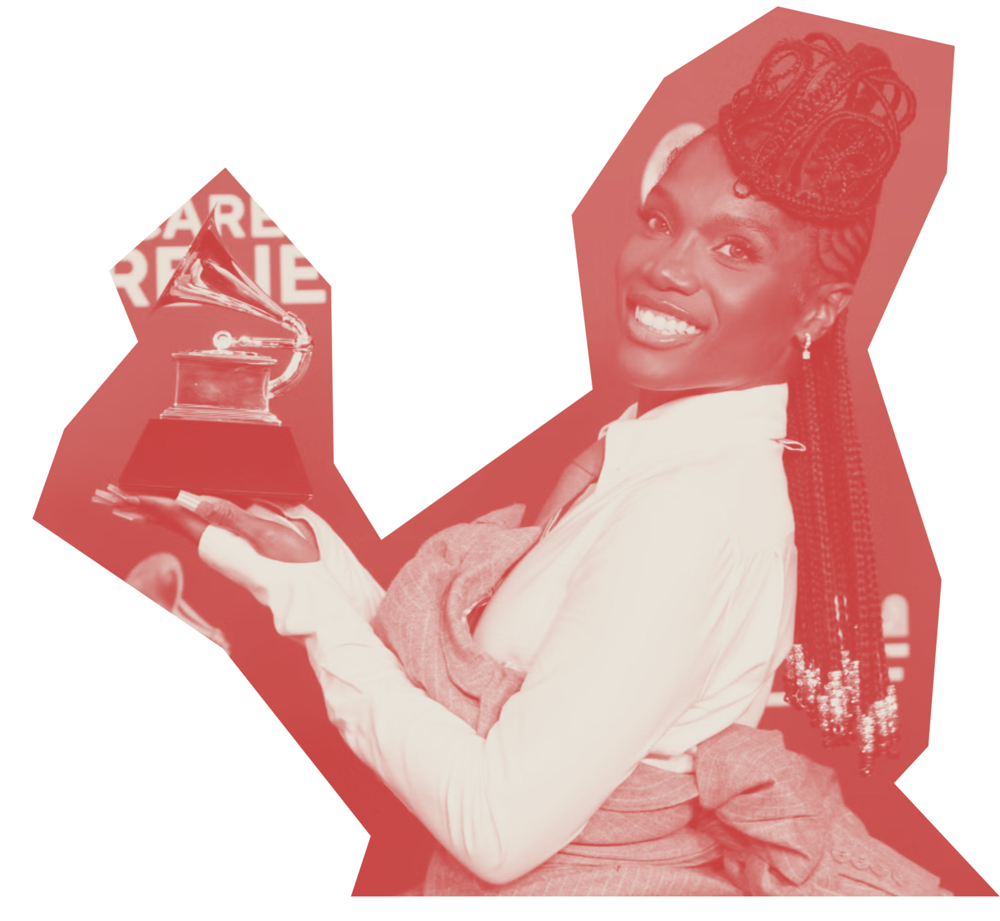

Los nominados
Para premiar el universo de la canción, los Grammys cuentan con dos categorías, Canción del Año siendo una de ellas. Esta categoría ha estado presente desde la primera ceremonia, y se diferencia de Grabación del Año en el sentido que premia la letra de la canción, o sea, a quien, o quienes, la escribieron, más que la canción en sí en aspectos melódicos, instrumentales o de producción.
A pesar de ser una categoría que premia la letra más que la música en sí, al mirar a los nominados de los últimos 25 años, igualmente se ha podido apreciar una tendencia hacia el Pop. Hasta el año 2007, a pesar de la representación de varios géneros en la categoría, se puede ver una preferencia hacia el Rock, pero desde el 2008 en adelante se puede ver un corte abrupto de este género y el surgimiento de una preferencia por el Pop que cada vez se hace más evidente.
También se puede ver como géneros como el Rap y el R&B destacan dentro del poco espacio que deja el Pop para otros géneros. Esto tiene sentido, considerando que son géneros que se sostienen mucho a partir de sus letras, y que muchas veces giran en torno a materias que se podrían considerar más serias que la canción Pop promedio.

Cuando vemos a los ganadores de los últimos 25 años, también es evidente la preferencia por el Pop. Pero, dentro de la gran cantidad de ganadores de ese género, también se puede apreciar una leve variedad si es que comparamos esta categoría con una como Álbum del Año. En los últimos 10 años, 5 ganadores han sido canciones Pop, 3 han sido de R&B y 2 de Rap. Dos de estas canciones, This is America (Rap) y I Can’t Breathe (R&B), cubren temas sociales, particularmente el racismo que se vive en Estados Unidos.
De todas formas, parece difícil encontrar un patrón en los nominados y ganadores de esta categoría que no tenga que ver con la popularidad de las canciones, sobre todo cuando un año puede ganar una canción con letras que dicen “Rezando por un cambio, porque el dolor te hace más blando. Todos los nombres que te rehusas a recordar eran el hermano, el amigo de alguien o el hijo de una madre que está llorando, cantando”, mientras que el año siguiente puede ganar una que dice: “Soy del tipo malo, el que pone triste a tu madre, hace que tu novia se enoje, el que podría seducir a tu padre, soy el tipo malo, duh”.
Esto no significa que una canción con una letra menos “profunda” deba ser vista en menos, no es fácil escribir una buena canción pop al final del día, pero sí nos obliga a preguntarnos bajo qué tipo de criterio funciona la categoría de Canción del Año ¿Bajo uno que premia letras profundas y sentimentales? ¿O uno que premia la letra más pegajosa?